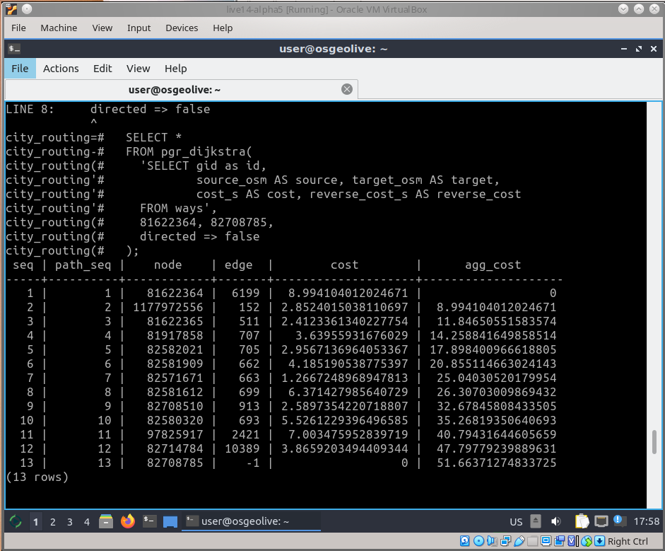

pgRouting¶
Strumenti GIS¶
pgRouting estende il database spaziale PostGIS/PostgreSQL per fornire routing geospaziale e altre funzionalità di analisi delle reti.
I vantaggi dell’approccio di un database di routing sono:
I dati e gli attributi possono essere modificati da molti clients, come QGIS e uDig attraverso JDBC, ODBC, oppure direttamente utilizzando Pl/pgSQL.
I cambiamenti dei dati possono essere riflessi istantaneamente attraverso il motore di routing. Non c’è bisogno di calcolarlo precedentemente.
Il parametro «costo» può essere calcolato dinamicamente tramite SQL e il suo valore può provenire da più campi o tabelle.
pgRouting è disponibile sotto la licenza GPLv2+ ed è supportato da una comunità crescente di singoli individui, aziende e organizzazioni.
{kind=link}
Caratteristiche principali¶
pgRouting fornisce funzioni per:
Tutti i Percorsi più Brevi a Coppie * Algoritmo di Johnson * Algoritmo di Floyd-Warshall
Percorso più breve * algoritmo A* * algoritmo Dijkstra
Percorso più breve bi-direzionale * algoritmo A* * algoritmo Dijkstra
Distanza di guida
K-Shortest Path * algorithm Yen’s
Commesso viaggiatore
E molti altri
Per maggiori informazioni guarda la documentazione di pgRouting.
Dettagli¶
Sito web: https://pgrouting.org/
Licenza: GNU General Public License (GPL) version 2
Versione Software: 3.3.0
Piattaforme Supportate: Linux, Mac, Windows
Interfacce API: SQL
Supporto commerciale: https://pgrouting.org/support.html